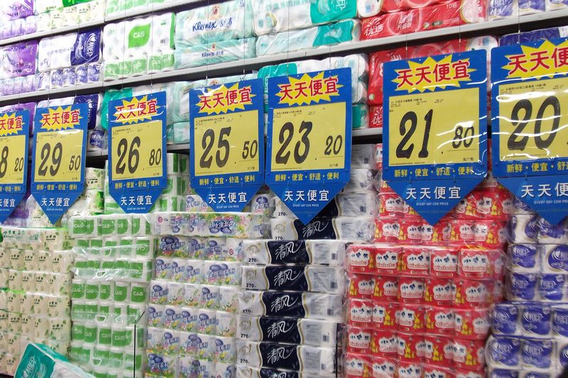

大陆生活指南：抱好孩子看住狗，管住媳妇儿禁网友。走路千万一圈儿瞅，被车撞了别回头！吃的最好地里有，加工食品严忌口。拆你屋子你就走，留下容易火浇油！补充营养留一手，自家养头花奶牛。生病你去问病友，医生拿你当条狗。房价已然鬼见愁，先算命里有没有。低调做人溜边儿走，能走多远看户口。

李多多
2011-06-14
李多多
2011-06-14
不管是加息也好，储备金利率提高也好，已经改变不了目前Cpi通胀的指数，我们可以做一个简单的调查，房产调控根本没有见效，物价飞涨比东南亚任何一个国家都要快，且这些涨价因素大多都是来自于垄断性质的企业，就像农产品涨价农民没有得到实惠、而我们看到的只是菜价居高不下。。。。。
李多多
2011-06-14
现在什么商品都是既涨价又缩水，日子还怎么过，看了看卫生纸的价钱，我只能希望旧报纸不要涨价……
- 